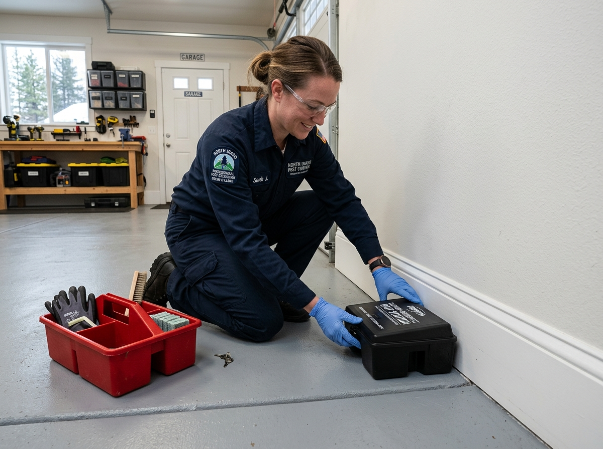

Comprehensive Inspection
We inspect foundations, crawl spaces, attics, rooflines, garages, and subfloors to locate rodent runways, entry points, droppings, and nesting areas.
Four parts, from the initial inspection to structural exclusion.
We inspect foundations, crawl spaces, attics, rooflines, garages, and subfloors to locate rodent runways, entry points, droppings, and nesting areas.
We place targeted mechanical traps and capture stations along active travel paths to remove existing mice or rats from affected areas.
We seal entry gaps around pipes, vents, foundation joints, crawl space doors, and AC lines using materials suited to the opening and structure.
Exterior stations can be placed around the property perimeter to help address rodent activity outside the home. Exclusion work is covered by the stated warranty.
Rodents can enter homes through small openings around foundations, crawl spaces, garages, rooflines, pipes, vents, and utility lines. Once inside, they may move through attics, wall voids, basements, and other protected areas.
Traps can remove rodents already inside, but trapping alone does not address the openings that allow new rodents to enter. A complete rodent control plan combines inspection, trapping, structural exclusion, and prevention.
Four steps. No surprises.
Call (208) 248-2701 and tell us what signs of rodents you have noticed, such as scratching sounds, droppings, nesting material, or chewed surfaces.
The property is inspected inside and outside to identify active areas, travel paths, nesting locations, and possible entry points.
Active rodents are addressed with appropriate traps, while accessible exterior entry points are sealed with suitable exclusion materials.
Traps and treated areas are checked during follow-up service, and additional entry points can be addressed when needed.
How we approach rodent activity with specialized tools and inspection standards.
UV lights can help identify certain rodent urine marks and activity areas during inspections.
Metal mesh can be used to cover suitable openings around crawl spaces, vents, and other areas where rodents may enter.
Locked exterior stations can be used around the property where appropriate to address outdoor rodent activity.
Mechanical traps can be placed along active travel routes and other areas where rodent activity has been identified.
Rodent control can combine inspection, sanitation, exclusion, monitoring, and targeted trapping based on the conditions found at the property.
Sealing accessible entry points helps reduce the opportunity for new rodents to enter after existing activity has been addressed.
Treatment methods are selected with the location of pets, children, and other animals in mind.
Products used during treatment are applied according to their labeled directions and applicable requirements.
Notice any of these warning signs in your home or garage?
Rustling, scampering, or gnawing sounds at night can indicate rodent activity in attic insulation, ceilings, or wall cavities.
What we do: We inspect attic and crawl spaces, look for travel paths, and place targeted traps where activity is found.
→ Result: A treatment plan focused on the areas where rodent activity is present.
Small dark droppings behind appliances, under sinks, around cabinets, or near plumbing openings can indicate rodent activity.
What we do: We inspect nearby areas, trace possible entry points, and address accessible gaps.
→ Result: Rodent activity is addressed while possible access points are identified.
As temperatures change, rodents may seek warmer and more protected spaces inside buildings.
What we do: We inspect foundations, garages, crawl spaces, and other potential entry areas and address openings where appropriate.
→ Result: Fewer accessible entry points around the property.
Rodent activity can occur around homes, garages, crawl spaces, attics, outbuildings, and other structures in Coeur d'Alene and nearby North Idaho communities. Properties near wooded areas, open land, detached structures, or areas with accessible food and shelter may have different conditions to consider.
Our approach starts with finding where rodents are active and how they are getting inside. Treatment can then focus on trapping, exclusion, and conditions that may support continued activity.
Older homes and properties may have multiple utility openings, foundation areas, crawl spaces, and other locations that need to be checked during a rodent inspection.
Properties near wooded areas may have outdoor conditions that provide rodents with shelter and access toward buildings.
Homes and newer residential properties can have garage doors, utility penetrations, foundation gaps, and other openings that should be checked when rodent activity is found.
Cold weather can cause rodents to seek warmer areas inside buildings, including crawl spaces, garages, and wall voids.
Moist crawl spaces can provide shelter and nesting conditions for rodents.
Branches close to roofs can provide access to rooflines and other parts of a structure that need inspection.
Firewood piles, sheds, garages, and other outdoor structures can provide shelter for rodents near the home.
Documented field results from homes and properties in Coeur d'Alene, Hayden, and Post Falls.
Attic Scratching
Scratching or rustling sounds are heard from the attic or ceiling.
The attic and exterior are inspected, active rodent areas are identified, traps are placed where appropriate, and accessible entry points are addressed.
Kitchen Pantry Activity
Droppings are found behind appliances, under sinks, or around food storage areas.
Nearby travel paths and entry points are inspected, active rodents are addressed, and openings around plumbing or other access points are sealed where appropriate.
Crawl Space Activity
Droppings, nesting material, or damaged insulation are found inside a crawl space.
The crawl space is inspected, active areas are addressed, and suitable foundation or vent openings are checked for exclusion work.
Common problems we address for Coeur d'Alene homeowners.
Rodents may gnaw on wiring, insulation, and other materials inside buildings.
We identify active areas, address the rodents, and inspect potential entry points that may allow continued access.
Rodent droppings and nesting material can appear around kitchens, attics, crawl spaces, garages, and other areas.
We locate active areas, address rodent activity, and provide guidance on cleaning and prevention.
Trapping rodents without addressing entry points can leave openings for new activity.
We inspect the structure for accessible gaps and recommend exclusion work to reduce future entry.

Professional rodent control targets entry points and harborage areas to protect your home and prevent repeat infestations.
Structural Exclusion
Sealing suitable foundation gaps, utility openings, crawl spaces, and other access points can help reduce future rodent entry.
Targeted Indoor Trapping
Mechanical traps can be placed in areas where rodent activity has been identified.
Protects Insulation & Wiring
Addressing rodent activity can help reduce damage to insulation, wiring, stored materials, and other parts of the property.
Ongoing Prevention
Inspection findings can help identify conditions that may contribute to recurring rodent activity.
Our rodent control process focuses on identifying activity, locating entry points, addressing existing rodents, and reducing future access.
Hearing Scratching or Finding Droppings?
Schedule a rodent inspection to identify where the activity is coming from and what areas may need treatment or exclusion.

Straight answers from our technicians.
Rodents can enter through gaps around foundations, doors, vents, pipes, utility lines, crawl spaces, garages, rooflines, and other openings.
Indoor rodent control should be based on the location and type of activity. Mechanical traps, exclusion, inspection, and other methods may be considered based on the conditions found.
Cost depends on the type of rodent, property size, level of activity, entry points, treatment needed, and follow-up work. An inspection helps determine the scope of the problem.
Treatment methods and product placement should account for children and pets. Any products used should be applied according to their labeled directions.
Rodent exclusion involves identifying and sealing openings that rodents can use to enter a building. It is an important part of reducing recurring rodent entry.
The timeline depends on the number of rodents, nesting locations, access points, property conditions, and treatment required. Follow-up inspections may be needed when activity continues.
Comprehensive pest management for North Idaho homes and properties.
Ants can use foundation gaps, cracks, plumbing openings, and other access points around a property.
View Ant Control →Carpenter ants may be found around damp or damaged wood and other parts of a structure.
View Carpenter Ant Control →Spider control addresses activity around sheltered areas such as windows, eaves, garages, and other parts of a property.
View Spider Control →Fleas may be present in areas where pets or other animals spend time. Treatment focuses on affected areas and conditions supporting flea activity.
View Flea Control →Do not ignore scratching sounds, droppings, nesting material, or chewed surfaces. Tell us what you are seeing and schedule a rodent inspection.
Reach out to schedule a visit or ask a question. We answer calls during business hours.
Phone
(208) 248-2701Address
Coeur d'Alene, Idaho
Hours
Monday to Friday: 7 AM to 7 PM
Saturday: 8 AM to 4 PM
Sunday: Emergency calls only
24/7 Emergency Available